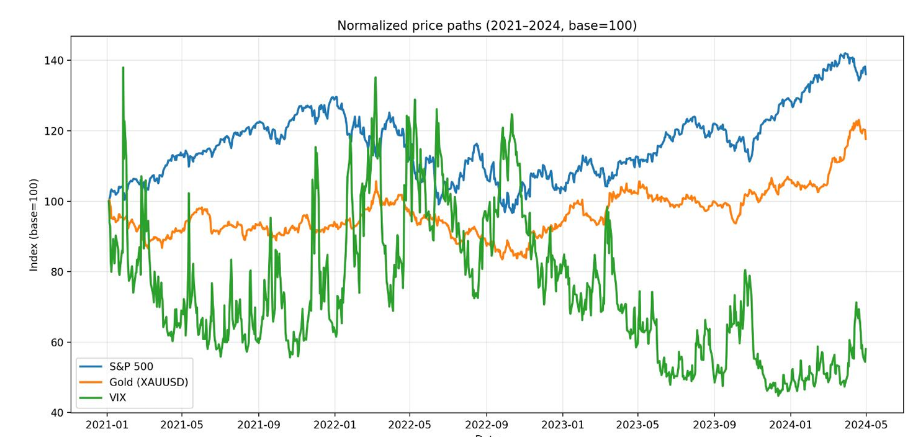
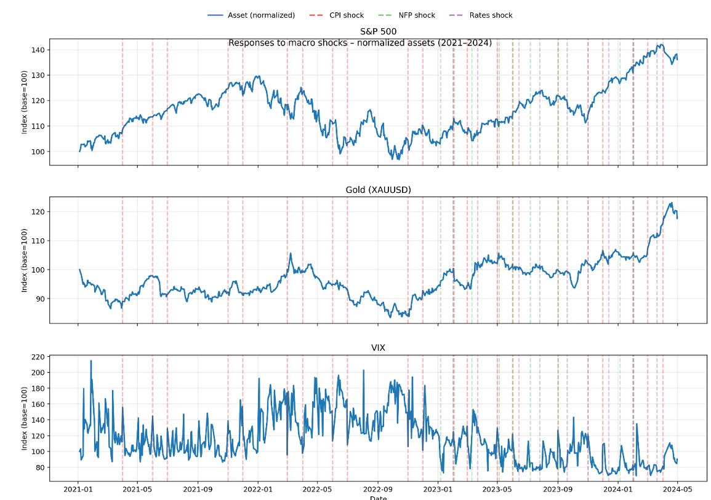
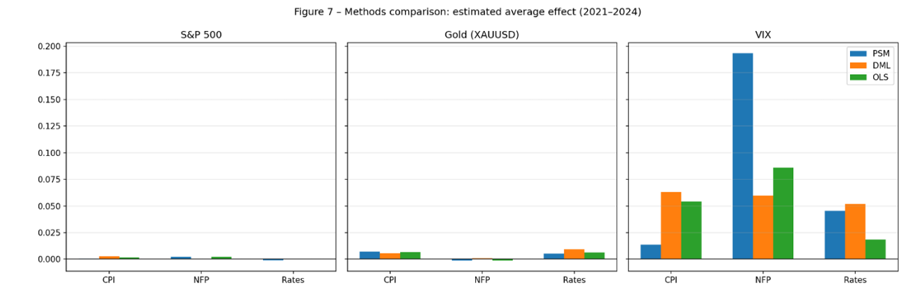
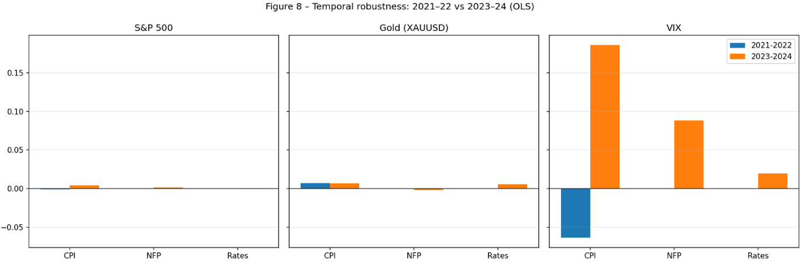
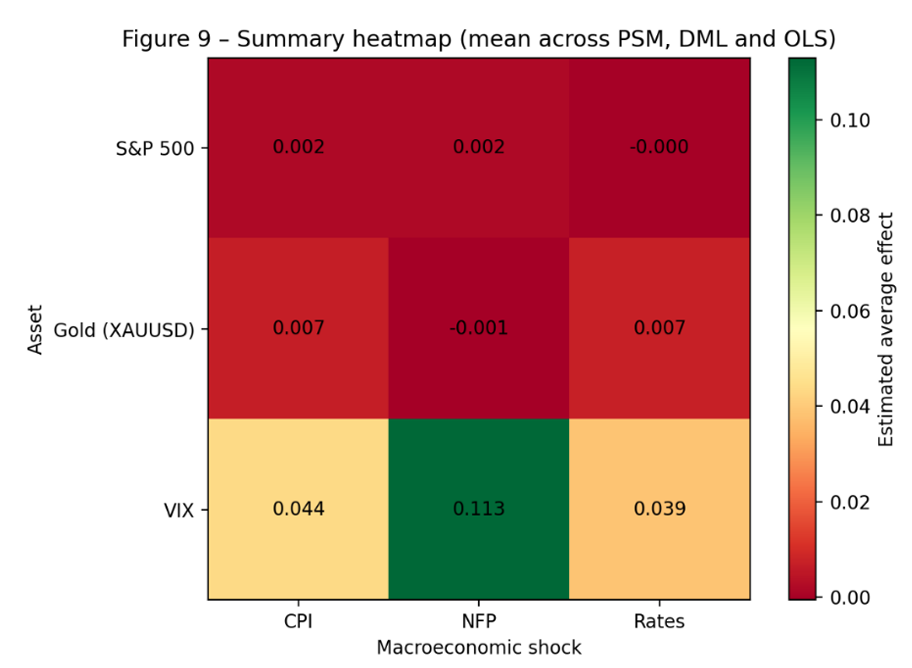

This page is an extract of my bachelor thesis, “Causal AI and Forecasting Models in Financial Markets: A Causal Analysis of Market Dynamics”, developed within the Economics and Big Data program at Roma Tre University.
Most market models optimize prediction. That is useful, but it is not identification. In finance, variables often look informative because they co-move with prices, not because they structurally drive them. This research focuses on a stricter question: whether key macroeconomic announcements produce statistically measurable causal effects on asset returns once confounding market dynamics are controlled for.
Executive overview
The empirical setup treats three macroeconomic announcements as binary treatments: CPI (inflation releases), NFP (employment reports), and FOMC (monetary policy decisions). These treatments are evaluated across three assets: the S&P 500, Gold (XAUUSD), and the VIX. This yields nine treatment–outcome combinations.
1) From prediction to identification
Baseline supervised models highlight a common limitation: predictive performance can be modest in noisy assets even when models are well specified. This work therefore shifts focus from prediction to identification: estimating whether macro announcements generate measurable causal effects on returns.
2) Research design
Three macroeconomic announcements are modeled as binary treatments: CPI (inflation releases), NFP (employment reports), and FOMC (monetary policy decisions). Outcomes are daily log-returns for S&P 500, Gold (XAUUSD), and VIX, for a total of nine treatment–outcome experiments.
2.1 What the “shock” is (and what it is not)
In this design, a “shock” is defined as the announcement day itself (treatment = 1 on release days, 0 otherwise). The estimand is therefore an announcement-day effect: the average return difference on announcement days relative to comparable non-announcement days.
This does not isolate the unexpected surprise component of a release (e.g., actual minus survey forecast).
Isolating surprises would require forecast data (typically from surveys) and a different treatment construction.
What this captures instead: information arrival and interpretation, liquidity repricing around known event times,
and risk-premia adjustments that tend to cluster on scheduled macro dates.
2.2 Timing and return measurement
Returns are computed as daily logarithmic returns from daily price series. This means the estimated effects reflect same-day repricing at the daily frequency and may combine (i) anticipation into the release and (ii) the reaction after the release, within the same daily window.
2.3 Identification assumption
Identification relies on a conditional independence assumption: conditional on pre-treatment market variables (e.g., lagged returns and lagged VIX), announcement timing is treated as as-good-as-random with respect to same-day returns. Practically, this is implemented through matching / residualization and a DAG-informed back-door adjustment set built only from pre-treatment covariates.
3) Methodological framework
Identification is approached through estimator triangulation rather than a single model: Double Machine Learning (DML), Propensity Score Matching (PSM), and a DAG-informed back-door OLS specification with Newey–West HAC errors.
Robustness is evaluated by varying model complexity in DML (trees/depth) and by splitting the sample into 2021–2022 vs 2023–2024 to test regime stability.
4) Empirical evidence
4.1 Baseline dynamics (2021–2024)
Figure 3.1 — Normalized trends (S&P 500, Gold, VIX), 2021–2024
Normalized price paths (base = 100) for the three assets over the sample window.

Normalized series provide a structural read: equities show trend phases and corrections, gold increases during uncertainty windows, and the VIX displays spikes around shocks and high-volatility episodes.
4.2 Visual reaction to shocks
Figure 3.3 — Reactions to CPI, NFP, and FOMC shock dates (normalized series)
Vertical markers indicate event dates for inflation (CPI), employment (NFP), and monetary policy decisions (FOMC / rates).

A first-pass visual inspection suggests heterogeneous reactions: gold aligns more closely with inflation announcement windows, while VIX spikes are more prominent around monetary policy decisions. Equity responses appear less structurally stable and more regime dependent.
4.3 Estimated treatment effects (cross-method comparison)
Figure 3.7 — PSM vs DML vs OLS: estimated announcement-day effects (2021–2024)
Comparison of estimated average effects across methods for each macro announcement and asset.

The cross-method comparison isolates a small set of relationships that remain directionally coherent across approaches. Two results emerge as the most robust: CPI announcement days show a positive and relatively stable effect on gold, and FOMC announcement days produce a pronounced response in the VIX. In contrast, NFP effects appear weaker and less stable across models and sub-periods.
4.4 Temporal robustness
Figure 3.8 — Temporal robustness (2021–2022 vs 2023–2024)
Same specifications estimated across two sub-periods to assess regime stability.

Splitting the sample into two macro regimes highlights time variation: gold’s CPI response is more pronounced during abrupt inflationary phases and tends to attenuate during stabilization. Meanwhile, the VIX shows clearer sensitivity to policy-related events, with differences in magnitude across periods.
4.5 Summary view
Figure 3.9 — Summary heatmap (mean across PSM, DML, and OLS)
A compact synthesis of estimated average effects across methods.

The heatmap synthesis is consistent with the core narrative: gold responds positively to CPI announcement days, the VIX is highly sensitive to monetary policy announcement days, and NFP effects remain overall weaker.
5) Interpretation and implications
The evidence supports a disciplined distinction between predictive association and structural impact. Two relationships emerge as the most robust across estimators and robustness checks: CPI → Gold (positive and relatively stable) and FOMC → VIX (pronounced response). Effects linked to NFP appear weaker and less stable across models and periods.
5.1 Economic magnitude (not just direction)
Beyond sign and robustness, magnitude matters. In the results table reported in the thesis, the estimated average effect on gold (XAUUSD) around CPI announcement days is in the order of +13 to +15 bps (PSM ≈ +13.2 bps; DML ≈ +14.6 bps). For the VIX, the corresponding estimated effect reported for one specification is around −19 to −21 bps (PSM ≈ −18.9 bps; DML ≈ −20.6 bps).
Interpretation: these magnitudes are statistically detectable in the thesis setup, but they remain moderate in economic terms and should not be interpreted as standalone trading signals. Their value is mainly analytical: they help discriminate between “macro variables that correlate with markets” and “macro events that appear to shift returns in a way that survives controls and robustness checks.”
Practically, this matters because a variable can improve a forecasting model without being a stable causal driver. Causal estimators act as a structural filter: they reduce spurious macro signals, support regime-aware interpretation, and improve risk calibration around event windows.
6) Limitations (stated plainly)
This is an observational, scheduled-event design and has structural limits:
- Limited treated days: the number of announcement days is small relative to non-announcement days, which can weaken overlap and matching quality.
- Daily frequency: daily returns can smooth intraday reactions and mix anticipation with post-release repricing.
- Binary treatment: treating announcements as 0/1 ignores the magnitude of the surprise component (actual vs forecast).
- Omitted concurrent shocks: global risk events (geopolitics, liquidity stress, idiosyncratic crises) can coincide with macro dates and are hard to fully control for.
- Unobserved confounding: conditional independence is an assumption; results should be read with that boundary in mind.
Bottom line
This research shows how combining predictive modeling with causal inference can help separate spurious correlation from structural effects in financial markets. The primary contribution is methodological: moving from forecasting outputs to identification-oriented estimates that can be validated across estimators, hyperparameters, and time regimes.
Sources (primary / checkable)
- Campita, S. (2024/2025). Causal AI and Forecasting Models in Financial Markets: A Causal Analysis of Market Dynamics. Bachelor’s thesis, Roma Tre University.
- Chernozhukov, V. et al. (2018). Double/Debiased Machine Learning for Treatment and Causal Parameters. (Listed in thesis bibliography.)
- Pearl, J. (2009; 2nd ed.). Causality: Models, Reasoning and Inference. (Listed in thesis bibliography.)
- Newey, W. & West, K. (1987). HAC standard errors. (Referenced in thesis methods section.)